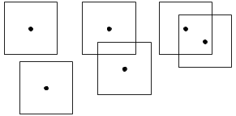
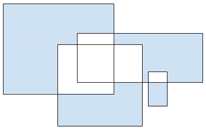

Code Jam 2020 - Round 3
Analysis: Recalculating
A quarter pi helps the math go down
As can be seen in the pictures in the statement, lines dividing distinguishable and non-distinguishable areas are always 45 degree diagonals. The reason is that the distinguishability can only change when the retrievability of some repair center changes, and those only change when crossing diagonals because of the sum in the L1 distance definition. Since horizontals and verticals are much easier to deal with than diagonals, we can rotate the whole problem by π/4 = 45 degrees. If we do that directly (for example, by multiplying all points by the corresponding rotation matrix) we will find ourselves dealing with points at non-integer coordinates, which has problems in itself. Notice that rotating is equivalent to projecting into new axes of coordinates. In this case, the directions of those new axes are the rows of the rotation matrix, or (2-2, 2-2) and (2-2, -2-2). The vectors (1, 1) and (1, -1) have the same directions but do not have length 1. We can still project onto them and end up with a rotated and re-scaled version of the input. Luckily, neither rotation nor re-scaling affects the ultimate result. So, a convenient transformation is to map each point (x, y) in the input to (x+y, x-y). Notice that in this rotated and scaled world, L1 distance changes to L∞ distance, which is just a fancy way of saying that those diagonals turn into horizontals and verticals that are exactly D meters away from the point in question. Although we will not explicitly mention it, this transformation is applied as the first step of all solutions presented here.
Test Set 1
We can write a solution for Test Set 1 by examining a few cases and finding a formula for each one. The set of points from which a repair center can be seen is an axis-aligned square of side 2D with the repair center at its center. Let us call that the r-square of the point.
There are 3 possible situations:

- I: The r-squares do not intersect.
- II: The r-squares intersect and the repair centers are outside each other's r-squares.
- III: The repair centers are inside each other's r-squares.
Situation I is the easiest to handle, because the answer is always 0, as Sample Case #2 illustrates.
Situation II is illustrated by Sample Case #1. As suggested in the statement, we can find the red area as 3 times the area of the intersection of both r-squares (notice that the intersection is not necessarily a square) and the blue area as the sum of both r-squares, 2×(2D)2, minus the area of the intersection.
In Situation III, the total area in which Principia could be deployed can be calculated in the same way as before. The distinguishable area, however, is slightly different. It can be simpler to calculate the non-distinguishable area (highlighted below), which consists of four copies of the same region, and then complement the result.

Test Set 2
Recall that Info(p) is the set of relative locations of repair centers that can be retrieved from a point p. Notice that when two points p and p' are very close, Info(p) and Info(p') will look similar. If the repair centers that can be retrieved from both are the same (which is true most of the time for points that are close to each other), then Info(p') is equal to Info(p) shifted by the shift between p and p'. However, if at least one repair center is retrieved from one of these points and not from the other, that is not true. In particular, Info(p) and Info(p') could be sets of different numbers of points.
First we deal with the changes in which repair centers can be retrieved by splitting the interesting area into parts. Within each part, the set of repair centers that can be retrieved is constant. Consider all the horizontal lines y=X+D and y=X-D for each x-coordinate X of a point in the input, and all vertical lines x=Y+D and x=Y-D for each y-coordinate Y of a point in the input. The points that are not surrounded by 4 of these lines (for example, the points above the highest horizontal line) are too far from all of the repair centers to be able to retrieve any of them, so we can disregard them for the rest of the analysis. These up to 4N lines divide the remaining points into up to 4N2 - 4N - 1 rectangular regions. Since all sides of all r-squares fully overlap with these lines, the set of repair centers that are retrievable from any point strictly within one of those regions is the same. The set of repair centers that can be retrieved from points on the lines might be different from those retrieved from any of its adjacent regions. However, since the area of each line is 0, the probability of Principia being deployed there is 0, so we simply ignore them and work with points strictly within regions. For each region R, we calculate the total area A(R) of distinguishable points in the region and the total area B(R) of points where Principia can be deployed. The answer is then the sum of A(R) over all regions divided by the sum of B(R) over all regions.
Fix a current region C. Going back to the first paragraph, Info(p) and Info(p') are shifts of each other for all p and p' from the same region. Calculating B(C) is easiest: it is either the area of C if Info(p) is non-empty for any point p in the region, and 0 otherwise. To calculate A(C), we can use an analysis generalizing our reasoning in Test Set 1. We need to find other regions R where Info(q) is a shift of Info(p) for a point q in R. In Test Set 1, this happened for the regions where one repair center can be seen, because the sets of a single point are always shifts of each other. We can check whether Info(p) and Info(q) are shifts of each other and find the appropriate shift if they are. First we check that they have the same number of points, and then we sort the points in an order that is invariant by shift (for example, sorting by x-coordinate and breaking ties by y-coordinate). In this way, we can fix the shift as the one between the first point of Info(p) and the first point of Info(q). Finally, we check that that shift works for all pairs of i-th points. If true, we can shift R by the found amount to obtain R', and the intersection between R' and C is a rectangle in which the points are non-distinguishable. If we do that over all regions R, the union of all those intersections is exactly the area of non-distinguishable points in C, and we can subtract it from the area of C to obtain B(C). There are many algorithms (with different levels of efficiency) to find the area of the union of rectangles aligned with the axes. Given the low limits of Test Set 2, it suffices to use a technique like the above, in which we extend the rectangle sides to lines and divide into regions, checking each region individually.
For each region C, the algorithm needs to find Info(p) for a point p in C, which takes time O(N), then iterate over all other O(N2) regions R and find Info(q) for a point there, check Info(q) against Info(p) for a shift, and possibly produce an intersection. That takes O(N) time per R, or O(N3) overall for the fixed C. Then, we need to take the union of up to O(N2) rectangles, which, with the simple algorithm above, can take between O(N4) and O(N6) time, depending on implementation details. This means the overall time, summing over all possible C, can be up to O(N8). Most implementations should be OK in most languages though. As we will see, there are many optimizations needed for Test Set 3, and even just doing the simplest of them would be enough to pass Test Set 2. Alternatively, there is a known algorithm to find the area of the union of K rectangles in O(K log K) time, and multiple references to it can be found online. Using it off the shelf would yield an overall time complexity of O(N4 log N), which is small enough to handle much larger limits than Test Set 2's.
Test Set 3
To solve Test Set 3, we have a lot of optimization to do. The first step is to avoid calculating Info for each region more than once. That alone does not change the ultimate time complexity of the algorithm from the previous section, but it is a necessary step for all optimizations that follow.
We divide the work into two phases. In the first phase, we group all regions that have equivalent Info sets. For each region C, we calculate S := Info(p) for an arbitrary point p in C as before, discard it if S is empty. Otherwise, we sort S, and then shift both C and the sorted result by the first point such that the shifted S' has the origin as its first point. In this way, S' is a normalized pattern for C, and two regions with Info sets that are shifts of each other end up with the same S. After doing this, we can accumulate all shifted regions for each S that appears, and process them together.
Notice that we can sort the input points at the very beginning and then always process them in order such that every calculated S is already sorted, to avoid an extra log N factor in the time complexity. A rough implementation of this phase takes O(N3) time if we use a dictionary over a hash table to aggregate all regions for each set S. We optimize this further below.
For the second phase, we have to process the set of shifted regions for each shifted S'. Since the regions are already shifted in a normalized way, we can process them all together. That is, instead of calculating A(C) for each individual C, we calculate A(S') := the sum of A(C) over all C in S'.
The picture below shows an example of the input we need to process for a fixed S'. There are multiple rectangular regions that have been shifted, so some may overlap now. We need the area of the part where no intersections happen (highlighted in the picture). If we do this by extending sides and processing each resulting region individually, we end up with an algorithm that takes between O(K2) and O(K3) time again, where K is the number of rectangles. However, the sum of the number of rectangles over all S' is O(N2), because each original region appears in at most one group. Therefore, the overall cost of the second phase implemented like this over all S' would be between O(N4) and O(N6).

We now have an algorithm with a first phase that takes O(N3) time and a second phase that takes between O(N4) and O(N6) time overall. We need to optimize further.
For the first phase, if we want to keep O(N2) regions and go significantly below O(N3), we need to make the processing of each region not require a full pass over the input points. Consider a fixed row of regions between the same two horizontal lines. Notice that each repair center can be retrieved from a contiguous set of those regions, and they become both retrievable and non-retrievable in sorted order of x-coordinate. Therefore, we can maintain the list of points that represent S in amortized constant time by simply pushing repair centers that become retrievable to the back of the list and popping repair centers that become non-retrievable from the front. This technique is sometimes called "chasing pointers".
Unfortunately, this is not enough, as we need to shift each S by a different amount, and shifting S requires time linear in the size of S. It is entirely possible for S to contain a significant percentage of points for a significant percentage of regions. We can do better by using a rolling hash of S. That would get us a hash of each S without any additional complexity. Unfortunately, we cannot shift the resulting hash. The last trick is, instead of hashing the actual points, hash the shift between each point and the last considered (adding a virtual initial point with any value). Those internal shifts are invariant to our overall shift of S, and since the first point of S' is always the origin, we can simply remove that one from the hash. The result is something that uniquely (up to hash collisions) represents the shifted S'. This change optimizes the first phase to run in O(N2) time.
To optimize the second phase — specifically the calculation of the values A(C) — we can use an algorithm similar to the one mentioned at the end of the previous section to calculate the union of the area of all rectangles. Consider a sweep line algorithm that processes the start and end of each rectangle in order of x-coordinate. We can maintain a data structure that knows, for each y-coordinate, how many rectangles overlap the sweep line at coordinate y. We need to be able to insert a new interval of y-coordinates each time a rectangle starts, remove one each time a rectangle ends, and query the total length of y-coordinate covered by exactly one rectangle. Multiplying that by the difference in x-coordinate between stops of the sweep line, we can calculate how much area to add to A(S') at each stop of the sweep line.
We can use a segment tree to efficiently represent that. At each node of the segment tree we need to record:
- (1) How many rectangles processed so far fully cover the interval represented by the node and do not fully cover its parent.
- (2) The total length covered by 1 or more rectangles within the interval represented by the node.
- (3) The total length covered by 2 or more rectangles within the interval represented by the node.
Since each insertion and removal requires going through at most O(log K) nodes, and the queries are resolved in constant time, using this sweep line algorithm with the described segment tree structure results in an algorithm that processes a set of K rectangles for the second phase in O(K log K) time. This results in O(N2 log N) time overall for the phase (and the algorithm), since, as we argued before, the sum of all K over all S' is O(N2).